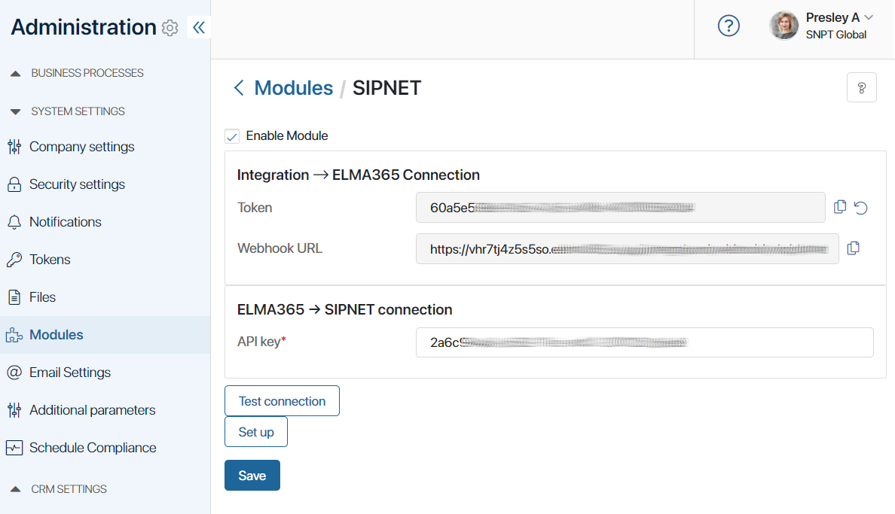
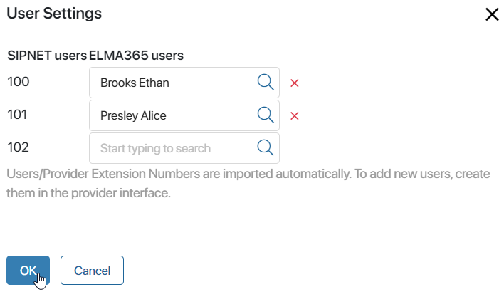
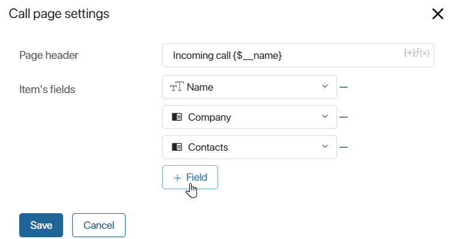

The module for connecting to the SIPNET IP telephony provider allows you to identify a customer by number, open a page of a related app, such as a deal or lead, during a call, and listen to call recordings directly on the page.
начало внимание
Make sure your SIPNET account is active before starting the installation.
конец внимание
Enable the module
- Sign into your SIPNET account. Select Virtual PBX on the left panel of the main page and go to the Admin section.
- On the page that opens, select Integrations. Copy the API key of your PBX field data.
- Go to the BRIX interface and open Administration > Modules > SIPNET.
- Check the Enable Module box.
- In the API Key* field paste the API key of your PBX.

- Click the Test connection button. If the connection between the systems is established, you will see a notification.
- Save the settings.
Merge users
After the connection with the provider is established, you need to match the IP-telephony provider users and BRIX users.
- On the settings page of the SIPNET module, click the Set up button.
- In the opened window, specify an BRIX user for each provider extension number.

- Click OK.
Please note, that the users/internal numbers of the IP telephony provider are loaded automatically. If this data is not displayed, make sure that you have created users on the provider’s side For more information, contact the SIPNET provider support: cz@sipnet.net.
Configure processing of incoming calls
After connecting telephony, it is necessary to configure incoming call processing. To do this, fill in the following fields in Incoming call processing settings:
- Associate with an app. Specify the app in which items with information about the client and call will be created and stored. Note, that the selected app form must contain a field of the Phone number type.
- Contact phone number. Select a field of type Phone number from the context of the specified app to which the customer’s phone number will be recorded.
- Call page. Click Set Up to change the appearance of the notification that pops up when a call is made. In the opened window, you can edit the page header template, as well as select the fields that will be displayed in it.

After setting up all the integration parameters, click Save.
Found a typo? Select it and press Ctrl+Enter to send us feedback